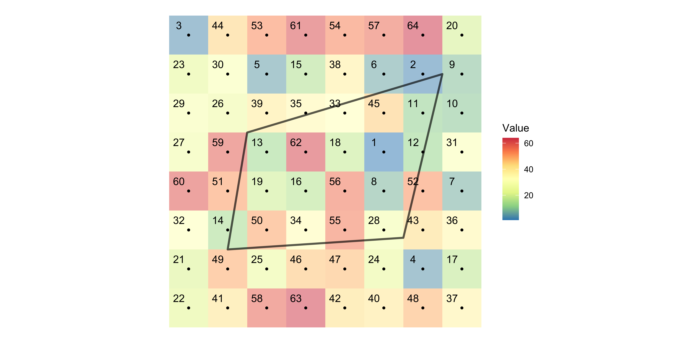
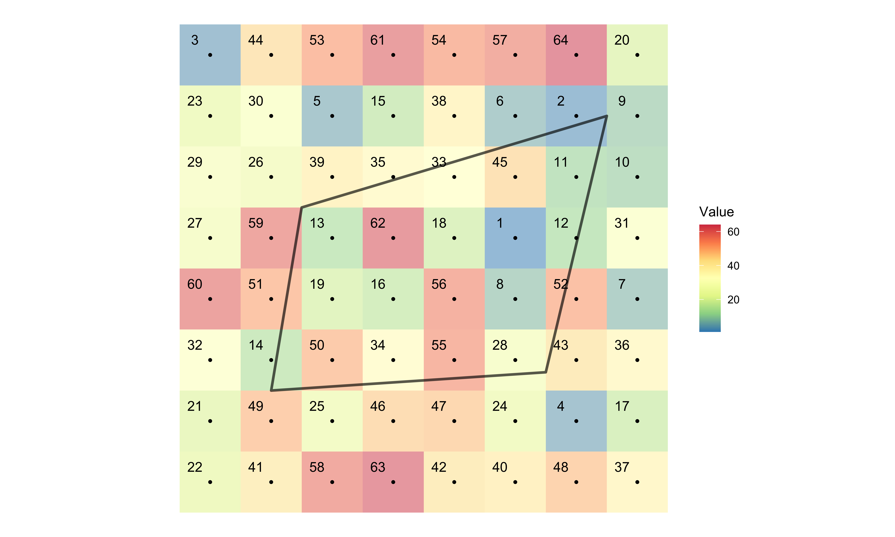

This is the deck that makes raster data useful to an economist. Almost every environmental variable you might want as a regressor arrives as a raster: rainfall, temperature, elevation, soil properties, satellite imagery. Almost every unit of analysis you care about is a vector: a field, a farm, a county, a well. So the recurring task is pulling raster values onto vector objects, and that is what extraction does. Before that we cover cropping and masking, which cut a raster down to the area you actually need. Both matter for speed, and on a large raster they matter a lot.
The learning objectives on screen give you the two core skills: spatially subset a raster with a vector extent, and extract raster values to point or polygon features. The table of contents adds a third section that completes the picture. Rasterize turns vector information into cells on a chosen grid, and zonal then uses one raster to group and summarize another. Use the three links in the table of contents to jump among those parts of the deck. If the plotting or data-manipulation syntax feels unfamiliar, the ggplot-two and d-ply-r primers in the right column are the intended prerequisites to review first.
Learn the spatial interactions of a vector and raster dataset. Specifically,
Crop (spatially subset) a raster dataset based on the geographic extent of a vector dataset.
Extract values from raster data for points and polygons.
The usual arrangement, and this deck is one of the more practical ones, built around a single real on-farm experiment. Two habits will serve you here. First, check the coordinate reference systems before you combine any two objects, because most of the failures on this deck come from mismatched projections rather than from anything conceptual. Second, after every extraction, look at how many rows came back compared to what you put in. Extraction to points and extraction to polygons return quite differently shaped results, and knowing which you are holding matters.
The controls on screen let you work through that material rather than only read it. Click the three horizontal lines at bottom left to open the table of contents and jump to a section, or press the letter o to see the overview of all slides. In each pale-blue code area, Run Code evaluates the whole cell. To run only part of a cell, highlight that part and press Command plus Enter on a Mac or Control plus Enter on Windows. The two-sheets icon copies the cell so you can paste it into R on your own computer. The reload icon immediately to its left restores the original code after you experiment, so you can make changes freely and still return to the worked example.
Click on the three horizontally stacked lines at the bottom left corner of the slide, then you will see table of contents, and you can jump to the section you want
Hit letter “o” on your keyboard and you will have a panel view of all the slides
A real setup, and a good one to have in mind. A nitrogen trial on a single field, with three objects. Corn yield as points, thousands of readings logged by the combine as it moved. Treatment blocks as polygons, the areas that received each nitrogen rate. And NDRE, a drone image of how green the crop is, as a raster. Print all three and look at them, then look at the map. The analytical problem is plain to see: three objects describing the same field, sharing no identifier, related only by position.
The first code cell prints each object so you can connect its class and columns to that description. Corn-yield and treatment-blocks are s-f objects with point and polygon geometry, while NDRE is a SpatRaster. The map then layers all three on an empty ggplot canvas. Geom-spatraster draws NDRE with alpha point four so the vector layers remain visible. The first geom-s-f maps point colour to yield and uses size point zero five because the combine produced so many observations. The second geom-s-f draws treatment boundaries in red and sets fill to N-A so those polygons do not cover the raster. The two scale calls give the NDRE fill legend and corn-yield colour legend meaningful names, and theme-void removes axes and background furniture so you can focus on spatial alignment. The chunk options make the figure three units wide, devote thirty percent of the display to the code track, and allow the figure to reach eight hundred pixels in height. Together, the printed objects and layered map show both the data structure and why location has to serve as the join key.
You have run an on-farm randomized nitrogen experiment on a field to quantify the impact of nitrogen on corn yield.
You have three datasets
corn_yield: sf of corn yield (bu/acre) observations data represented by pointstreatment_blocks: sf of treatment blocks represented by polygonsNDRE: SpatRaster of NDRE (roughly put, an indicator of how green the field is) taken by a droneHere is what they look like on a map:
Two operations, and they sound similar but do different things. Cropping cuts the raster down to a rectangle, the bounding box of a vector object, and it is fundamentally about size and speed. Masking sets cells outside your shapes to missing, following the actual outline rather than a rectangle, and it is mostly about appearance. Read the bullets under objective one, because the payoff is real: a smaller raster is faster to extract from and takes less memory. On drone imagery or a national weather grid, that difference is the one between a script that finishes and one that does not.
Objective 1
Crop the NDRE raster data (NDRE) to the bounding box of corn_yield
We can create a map that is more focused on the area of interest rather than the entire field
We can stop carrying around the unnecessary parts of the data, which reduces its size (This matters when your raster data is spatially very fine and large.)
Extracting value to an sf from a smaller raster data is faster (we will talk about this later)
Objective 2
Mask the NDRE data to treatment_blocks (assign NA to all the cells that are not intersecting with treatment_blocks)
The syntax is one function and two arguments, but do read the demonstration carefully, because it is designed to fail first. Running crop with the untransformed yield points throws an error, and the message says extents do not overlap, which never mentions projections at all. The cause is that one object is measured in degrees and the other in metres, so their extents describe entirely different places. Note the callout’s advice on which object to transform: always move the vector data to the raster’s CRS, never the reverse, because re-projecting a raster resamples its values and cannot be undone.
On the How tab, the first argument to terra’s crop function is the SpatRaster you want to subset and the second is the s-f object whose bounding box supplies the rectangular extent. The result remains a SpatRaster. On the Demonstration tab, the first assignment tries to create NDRE-sub directly from NDRE and corn-yield. When it fails, the separate c-r-s call for NDRE and s-t-c-r-s call for corn-yield let you inspect the two coordinate systems and diagnose the apparently unrelated extent error. The corrected call transforms corn-yield inside crop: c-r-s of NDRE supplies the target coordinate system to s-t-transform, and the transformed points supply the crop boundary. Keeping that transformation inside the call avoids modifying the original corn-yield object.
The final map is the visual check. Geom-spatraster draws NDRE-sub at alpha point four. One geom-s-f layer maps corn-yield colour to yield and uses very small points, and the other draws treatment-block outlines in red with N-A fill. The fill and colour scales label the NDRE and Corn Yield in bushels per acre legends, while theme-void removes non-spatial decoration. Figure width three, code track point three, and maximum figure height eight hundred control how the live code and map share the slide. You should see that the raster is now a rectangle focused on the yield-point extent. The vector outlines can still leave empty corners inside that rectangle, which is exactly what the Mask tab removes next.
You can crop a raster layer by using terra::crop().
Syntax
The resulting SpatRaster object is the original cropped to the bounding box of the sf object.
If you run the code above, then you should see an error. This happened because they do not share the same CRS.
Important!
Let’s change the CRS of corn_yield to that of NDRE and then try to crop again.
Let’s check visually.
Masking takes the same two arguments and sets every cell outside your polygons to missing. Compare its result with the crop from the previous tab: cropping gave you a rectangle that still included ground between and around the treatment blocks, whereas masking follows the block outlines exactly. Note also that we mask the already-cropped raster rather than the original, which is the usual order — crop first to make the object small, then mask for appearance. And read the note about na.value, because without it the missing cells render as grey rather than disappearing.
The How tab names the two inputs explicitly: a SpatRaster first and an s-f object second. In the demonstration, NDRE-sub is the raster being changed. Treatment-blocks is transformed to the coordinate system returned by terra c-r-s of NDRE-sub, then passed as the mask. The assignment saves the result as NDRE-sub-masked, so the unmasked crop remains available for comparison.
The map draws that masked raster at alpha point four and overlays the treatment-block polygons as red outlines with N-A fill. Scale-fill-viridis-c labels the raster legend NDRE, and its N-A-value argument is set to transparent. That argument affects only how missing cells are drawn, not which cells mask created. Theme-void removes the axes and panel, while code track point three, figure width three, and maximum height seven hundred keep the editor and result legible in the live slide. As the note asks, remove the transparent setting and rerun the cell once. The outside cells turn grey, which confirms that they are still raster cells carrying N-A rather than cells that have been physically removed.
Syntax
The resulting SpatRaster object will have NA assigned to all the cells that are not intersecting with any of the geometries in the sf object.
Let’s check visually.
Note
na.value = "transparent" in scale_fill_*() will make the cells with NA value transparent (cannot be seen).na.value = "transparent", run the code again, and you will see that cells with NA are grey.Your turn, on a different scale entirely: PRISM precipitation covering the whole of the contiguous United States, cropped and masked down to Nebraska. This is the case where cropping earns its keep, since you are discarding the overwhelming majority of the raster. Do them in that order, crop and then mask, and notice that the two functions chain together with a pipe perfectly happily. Then compare what you get against the map in the Data tab, which shows the whole country, and the difference should make the point about size on its own.
Start on the Data tab. Prism-u-s is the coarser precipitation raster for August first, twenty twelve, and ne-counties is the s-f polygon layer. The output-only reference map passes prism-u-s to geom-spatraster, draws the county boundaries in orange with geom-s-f, and removes the map furniture with theme-void. Exercise one gives you the same ggplot skeleton with the data arguments blank. Fill those in before opening the folded answer. Its evaluation-false option means the answer is displayed but not run, and code-fold true keeps it out of sight until you choose to check your work. The stacked layout on the editable cell places its output beneath the editor.
In exercise two, first build prism-u-s-cropped-masked. The answer begins with prism-u-s, pipes it into terra crop with ne-counties as the extent, then pipes that smaller raster into terra mask with the same county polygons. Because a piped object becomes the first argument, each line is the same two-input operation you used in the demonstration. The second empty, stacked cell is for plotting the result. The answer supplies the new raster to geom-spatraster, overlays ne-counties in orange, and again uses theme-void. Compare the national reference map with this Nebraska-only result and check both the rectangular reduction from crop and the county-shaped N-A boundary from mask.
We use
prism_us: a coarser version of PRISM precipitation data on 08/01/2012 covering the entire contiguous U.S. (SpatRaster)
ne_counties: counties in Nebraska (sf)
Here is what they look like:
Create the map you saw in the previous tab.
Answer
Crop and then mask prism_us using ne_counties.
Create a map using the cropped- and masked-prism_us and ne_counties.
Answer
Two tabs, one for each kind of target, and they behave differently in a way worth understanding before you write any code. Extracting to a point is simple: each point sits in exactly one cell, so it gets exactly one value. Extracting to a polygon is not: by default, it gets values from cells whose centres fall inside the polygon, and you must decide how to reduce them to one. If no cell centre falls inside a small polygon, the default small = TRUE falls back to intersecting cells; use touches = TRUE or exact = TRUE when you want every touched cell. The two diagrams show this with an eight-by-eight grid small enough to check by hand. Count the cell centres inside the polygon in the second picture and you will see the problem immediately.
On the To points tab, the numbers printed inside the coloured cells are the raster values. Follow each point to the cell containing it: Point one receives fifty, Point two receives four, and Point three receives fifty-four. That is one raster value per point, so the extracted table can line up with the point rows one for one. On the To polygons tab, the black dots mark cell centres and the outlined feature crosses many cells. Under the default rule, only values from cells with those centres inside the outline are assigned, producing many cell values for one polygon. That many-to-one relationship is why polygon extraction needs a summary step and why the choice among centre, touched-cell, and exact-coverage rules can affect the answer.
Definition
For each of the points, find which raster cell it is located within, and assign the value of the cell to the point.
Example

The numbers inside the cells are the values that the cells hold.
After the extraction,
Definition
By default, identify the raster cells whose centres fall inside each polygon, and assign their values to the polygon. If no cell centre falls inside, small = TRUE falls back to intersecting cells; use touches = TRUE or exact = TRUE to include every touched cell.
Example

By default, find the raster cells whose centres fall inside each polygon
Assign the values of those cells to the polygon (n-to-1). Use touches = TRUE or exact = TRUE to include every touched cell.
Back to the field experiment, and here is the reason for everything in this section. You have yield points, treatment blocks and a drone image sitting as three unrelated objects. You want two analyses, one where each yield point is an observation and one where each treatment block is. Neither is possible until the NDRE values are attached to those objects, and nothing but geography can attach them. This is the same joining problem as the previous deck, with a raster on one side instead of a vector, and the next two tabs take the two targets in turn.
Right now, corn yields (corn_yield), NDRE (NDRE), and treatment blocks (treatment_blocks) are separate R objects.
We would like to conduct two kinds of analysis
To achieve this, we would like to join them based on their locations
NDRE to corn_yieldNDRE to treatment_blocksExtraction to points, and the same function serves both cases. Two things to take from these tabs. First, note that extract behaves differently from crop when the projections disagree: rather than refusing, it quietly re-projects for you and warns that it did. Convenient, but transform explicitly anyway so your code says what it means. Second, understand the ID column, because it is how the result gets back to your data. Row n of the extraction corresponds to row n of the sf, which is what makes the assignment on the post-processing tab safe.
The How tab puts the SpatRaster first and the s-f points second in terra extract. In the first demonstration call, those inputs are NDRE and corn-yield. The callout contrasts the resulting transformation warning with crop’s extent error so you know that successful output does not prove the coordinate systems already matched. The corrected call uses s-t-transform on corn-yield with c-r-s of NDRE as the target. The surrounding parentheses both assign the table to NDRE-extracted and print it, letting you inspect the ID and NDRE columns immediately. ID three, for example, belongs to row three of corn-yield.
On the post-extraction tab, class confirms that NDRE-extracted is an ordinary data frame, not an s-f object. Because there is one returned value per input point and the row order is preserved, mutate can add the numeric NDRE column to corn-yield by taking NDRE-extracted dollar NDRE. The commented alternative assigns that same vector with dollar notation. In either version, selecting the NDRE column matters: you want the values, not the entire extraction table or its ID column.
The Multiple layers tab shows why one extract call can save work. NDRE-one-hundred is made by multiplying every NDRE cell by one hundred, then names changes that layer’s attribute name to NDRE-one-hundred. The c function stacks NDRE and NDRE-one-hundred into a two-layer SpatRaster, and the parentheses print the result as it is assigned. Autorun true runs that setup cell when the slide is opened. Extract then uses the two-layer raster and the explicitly transformed yield points, returning ID followed by one value column for each raster layer. In cbind, square-bracket comma minus one removes the ID column before the two value columns are attached to corn-yield. The note warns you to inspect the result: corn-yield already has an NDRE column from the previous tab, so R keeps both and silently renames the incoming duplicate NDRE-dot-one. This is harmless only because those two columns happen to contain the same values here. For real analysis, a dot-one suffix is a signal to verify which variable you intend to use before moving to polygon extraction.
You can use terra::extract() with the following syntax.
Syntax
Extract NDRE values to each of the yield points:
This one does not fail. Run it and you get a result, along with a warning reading [extract] transforming vector data to the CRS of the raster.
crop() refuses, extract() transforms for you
The two functions treat a CRS mismatch completely differently, which is worth knowing before it confuses you:
terra::crop() errors. The message is [crop] extents do not overlap, which never mentions the CRS — degrees and metres simply describe different places.terra::extract() carries on, re-projecting the vector data for you and warning that it did.So extract() is forgiving, but do not rely on it. Transform the vector data to the raster’s CRS yourself, as below, and the intent of your code is explicit.
Important
ID variable represents the row number in the sf (here, corn_yield). For example, ID == 3 in NDRE_extracted is for corn_yield[3, ].Just extracting the raster values to the points is not where we stop. We need to merge the extracted values back to the points data so that we can use them for further analysis.
Let’s first check the class of NDRE_extracted.
The nth row in NDRE_extracted is for the nth point in corn_yield.
So, you can simply do this:
You can extract values from multiple layers at the same time using terra::extract() just like you did with a single-layer raster data.
For demonstration, let’s create a multi-layer raster data:
The resulting object is a data.frame, and the values from the first (second) layer are in the second (third) column.
Look at the column names
corn_yield already picked up an NDRE column a couple of tabs ago, so this cbind() brings in a second copy. R does not overwrite it or complain — it renames the newcomer NDRE.1. Harmless here, since the two hold the same values, but a column silently named something.1 is always worth a second look.
Same function, quite different result, and this is the most useful section of the deck. Each polygon returns many rows, one per cell whose centre falls inside by default, so you have to summarise before you can use them. Three ways are shown, in increasing order of care: group and average by hand, let extract do it with the fun argument, or weight by how much of each cell actually falls inside the polygon using exact. That last one matters whenever the cells are large relative to the polygons. Also read the callout about assigning a summary table into a column, which is a mistake that fails silently.
The How tab uses the same argument order as point extraction: the SpatRaster first and the s-f polygons second. In the Demo, s-t-transform moves treatment-blocks to the c-r-s of NDRE before extraction, and warning false keeps warnings out of the displayed cell output. Class confirms that NDRE-extracted-t-b is a data frame. The two row slices, rows one through ten and two hundred through two hundred ten, are there so you can see IDs repeat. Each repeated ID identifies the row of treatment-blocks that contains those raster cells, so one polygon occupies many rows in the extracted result.
On Post-extraction processing, group-by ID collects all cells belonging to the same treatment block. Summarize then takes mean NDRE and names the result avg-NDRE, leaving one row per ID. The assignment works because ID equal to n refers to row n of treatment-blocks, so mutate adds the numeric vector avg-NDRE dollar avg-NDRE in the corresponding order. The commented dollar-assignment is equivalent. Do not replace that vector with the whole avg-NDRE data frame. As the callout explains, d-ply-r deliberately permits data-frame columns, so the mistaken assignment can create a nested column without an immediate error and cause a confusing failure later.
The Extract and summarize tab performs the same reduction inside terra extract. Its fun argument is mean, so the function returns one mean value per polygon instead of every underlying cell value. Warning false again controls what the live output displays. This concise route is appropriate when the ordinary unweighted mean is the summary you need.
The Area-weighted summarization tabs explain when that ordinary mean is an approximation. By default, every selected cell contributes equally even if one cell barely overlaps a polygon and another is almost entirely inside. Here the raster cells are very small relative to the treatment blocks, so equal weighting is acceptable. With larger cells, exact true includes the intersected cells and adds a fraction column recording the share of each cell covered by the polygon. The next pipeline groups by ID and calculates sum of NDRE times fraction divided by sum of fraction. The denominator rescales the included fractions so the result is a coverage-weighted mean rather than a weighted total.
Finally, the Multiple layers tab passes NDRE-two-layers, the transformed treatment blocks, and exact true to one extract call. Head lets you verify that the returned table contains ID, NDRE, NDRE-one-hundred, and fraction before summarizing. The last pipeline groups once by ID and applies the same fraction-weighted formula separately to both value columns. Code track point five gives the editor half of the available track so both summary expressions remain readable. The important pattern is that one ID and one fraction column can organize several raster variables at once. With the vector-target routes complete, the next section turns the direction around and puts vector information onto a raster grid.
You can use terra::extract() with the following syntax. Yes, same as value extraction to points.
Syntax
Extract NDRE values to each of the treatment blocks:
It’s a data.frame.
As you can see below, there is more than one NDRE value for each of the treatment blocks, which is expected, as many grid cells fall inside each one.
Let’s check the class of NDRE_extracted_tb.
We just want one NDRE value for each of the treatment blocks. So, let’s summarize them. In doing so, we summarize by ID as it indicates the row number of treatment_blocks. Here, we are getting the average.
Now, we can assign the average NDRE values to treatment_blocks like below because ID == n is for nth row of treatment_blocks.
A data.frame will go into a column without complaining
dplyr lets you put a data frame in a column on purpose, so NDRE = avg_NDRE is not an error — it quietly nests the whole summary table inside treatment_blocks and the row count still matches. You find out much later, when printing or plotting the object fails with something that looks unrelated. Whenever the right-hand side of a mutate() came from summarize(), name the column you actually want.
You can actually extract and summarize both in terra::extract() using the fun option.
In the previous extraction and summarization tasks, all selected cells are given the same weight irrespective of the degree of spatial overlap.
This is very much acceptable in the current application, because the resolution of the raster data is high (cells are so small) relative to the size of the polygons.
However, if the cells are relatively large, you might want to consider calculating area-weighted summary.
We can add exact = TRUE option, which returns fraction variable indicating the fraction of the cells intersecting with the polygon.
Now, we can do fraction (area)-weighted summary of the extracted values:
Just like the case with value extraction to points, we can extract values from multiple layers to polygons in a single call with terra::extract().
Let’s get the weighted average for both variables:
rasterize() and zonal()Everything so far in this deck ran one way, pulling raster values onto vector objects, because that is what you need most of the time. This section covers the reverse, and the motivation is specific. Think about the field experiment we have been using. Yield arrives as a point cloud from the combine, treatments as polygons from the trial design, greenness as a drone image on its own grid. Three geometries describing one field. If you want a regression where every row is the same patch of ground, they all have to be on one common grid, and getting them there means turning the vector layers into rasters.
The two functions named at the bottom divide that job. Terra rasterize performs the vector-to-grid conversion, while terra zonal uses the resulting zone raster to group and summarize values from another raster. The next tab first builds the treatment-rate grid by borrowing NDRE’s geometry, and the tab after that uses those new cells to calculate mean greenness by treatment rate.
Everything so far has run in one direction: raster values onto vector objects. Occasionally you want the reverse — vector data turned into a grid.
The usual reason is that you have several layers describing the same field, all on different geometries — a yield point cloud from the combine, treatment polygons from the trial design, a drone image on its own grid — and you want them on one common grid so that every row of your regression is the same patch of ground.
terra::rasterize() does the conversion, and terra::zonal() summarises a raster using another raster as the grouping.
The function takes the vector data, wrapped in vect because terra prefers its own class, and a raster whose grid you want to borrow. Read the callout, because the second argument confuses people: the NDRE raster is there purely to donate its geometry, its resolution and extent and projection. None of its values are used at all. That is what makes the technique work, since passing the same template to every layer guarantees they all come out cell for cell identical. The field argument says which column supplies the values, and here it is the nitrogen rate the trial assigned to each block.
The Syntax tab also shows the fun argument. If several vector features land in the same cell, fun determines how their values are combined. So read the four positions as the SpatVector to convert, the SpatRaster template, the field to burn into cells, and a combining function when overlaps require one. The template callout is the key distinction: the second input controls cells, extent, resolution, and coordinate reference system, but contributes no NDRE measurements to the new rate raster.
On Try it, s-t-transform first creates t-b-p-r-j in NDRE’s coordinate system. Terra vect then converts those s-f polygons to a SpatVector inside rasterize. NDRE supplies the template, and field equals target-rate tells rasterize to fill each selected cell with the treatment block’s nitrogen rate. The assignment saves rate-raster, and the following line prints it so you can inspect its dimensions, extent, resolution, coordinate system, and value range. Autorun true makes this setup run when you reach the tab.
The plotting cell passes terra trim of rate-raster to geom-spatraster. Trim removes outer rows and columns that contain only N-A, making the figure focus on the populated field without changing the internal grid. Scale-fill-viridis-c labels the legend N rate and draws N-A cells transparently, and theme-void removes axes and background. Code track point four, figure width one point eight, and maximum height six hundred control the live editor and plot layout. The result should reproduce the treatment-block pattern as raster cells on exactly the NDRE grid.
The final note accounts for the alarming browser message. In WebR, rasterize can print a G-D-A-L Error one message about the object not being a Single-C-R-S. Here it is a warning from the WebAssembly PROJ build, not a failed rasterization. The returned nitrogen rates and the zonal table match the same calculation in RStudio, where that message does not appear. Check the returned object and map instead of treating the word Error alone as evidence that the result is unusable. Then move to the Zonal tab to use this rate raster as the grouping layer.
SpatVector: the vector data, wrapped in terra::vect()SpatRaster: the grid to use — its cells and extent, not its valuesfield: which column of the vector data supplies the cell valuesfun: how to combine, when several features land in one cellThe second argument is a template
NDRE is there only to donate its geometry — its resolution, extent and CRS. None of its values are used. That is the whole trick: pass the same template to every layer and they all come out on the identical grid, cell for cell.
Put the treatment blocks onto the NDRE grid, carrying the nitrogen rate:
A warning you can ignore here
In the browser, rasterize() prints GDAL Error 1: PROJ: proj_crs_get_coordinate_system: Object is not a SingleCRS. Despite saying Error it is a warning, and it comes from the WebAssembly build of PROJ rather than from anything you did. The raster it returns is correct — the nitrogen rates and the zonal() table below match what the same code produces in RStudio. You will not see this message on your own machine.
Once two rasters share a grid, one of them can group the other, and that is what zonal does. It takes the raster you want summarised, the raster defining the zones, and a function. Here it gives mean greenness by nitrogen rate, which is the question the trial was designed to answer. Look at the numbers rather than just the fact that it ran. Greenness does rise with nitrogen, and it rises very slightly, from about point six zero four to point six one two across the whole range. Noticing how small that is matters more than the code.
Read the syntax in that order: the first SpatRaster supplies the measurements, zones-SpatRaster supplies the group labels, and fun supplies the summary. In the worked call, NDRE is the measurement raster and rate-raster contains the five nitrogen-rate zones created on the previous tab. Fun equals the character string mean requests the average within each zone, and N-A-dot-r-m true removes missing NDRE cells rather than letting them make a group mean missing. The five-row output pairs each nitrogen rate with its mean NDRE. The note asks you to interpret that table, not merely confirm that zonal returned one. The next tab reconstructs the same table through extraction so you can choose the route that fits your goal.
Once two rasters share a grid, one can group the other.
Syntax
So, mean greenness by nitrogen rate — the actual question the trial was run to answer:
Read the result
Five nitrogen rates, five mean NDRE values, and greenness does rise with the rate — though by very little, which is itself worth noticing before anyone gets excited.
You can get the same table with extract and group_by from earlier in the deck once you map each extracted ID back to its target_rate, and it is worth knowing that both are legitimate. By default, the answers agree because rasterize and extract both use where each cell’s centre falls. If you use exact = TRUE, extract instead includes every touched cell and reports the fraction covered, so you can calculate an area-weighted mean. Neither convention is more correct in general, but you should know which one produced your number, because on a coarse grid the two can diverge sharply.
Follow the extract pipeline on screen. Terra extract pulls NDRE values for the projected treatment polygons in t-b-p-r-j and returns each polygon’s row number as ID. Mutate uses that ID as a row index inside t-b-p-r-j dollar target-rate, attaching the correct nitrogen rate to every extracted cell. Group-by target-rate then combines blocks assigned the same treatment, and summarize calculates mean NDRE with N-A-dot-r-m true so missing raster cells do not erase a group mean. That produces the same five treatment-level rows as rasterize followed by zonal, apart from floating-point rounding under the default centre rule.
The important callout explains exactly where agreement can end. Default rasterize assigns each whole template cell according to the polygon containing its centre, and default extract selects cells by the same centre test. Exact true changes extraction to include touched cells and supply their coverage fractions, enabling the area-weighted calculation from the polygon tab. This is a choice about representation, not a universal contest between right and wrong answers.
Use the final note as the practical decision rule. Choose extract when the outcome belongs on point or polygon features, which is the usual task in this deck. Choose rasterize when several different vector and raster layers must share one cell grid, especially for a regression where each row must describe the same patch of ground. Choose zonal once a raster of group labels already exists and you want a summary of another aligned raster by those zones.
To reach the same five-row table with extract() and group_by(), map each extracted ID to target_rate, then group by target_rate.
They agree by default; exact changes the rule
Running both default routes gives the same five means, apart from floating-point rounding, because they use the same cell-centre rule:
rasterize() assigns a whole cell to a polygon based on where the cell centre falls. A cell half-covered is either in or out.extract() also includes cells whose centres fall inside each polygon by default. With exact = TRUE, it includes every touched cell and reports its coverage fraction.Neither is more correct in general. What matters is that you know which convention produced your number, because on coarse grids the two can differ a great deal.
So when is rasterize() worth it?
Use extract() when you want values on your vector objects, which is most of the time. Reach for rasterize() when you need several different layers aligned to one grid — which is exactly the setup for a cell-level regression, and the reason this section exists.